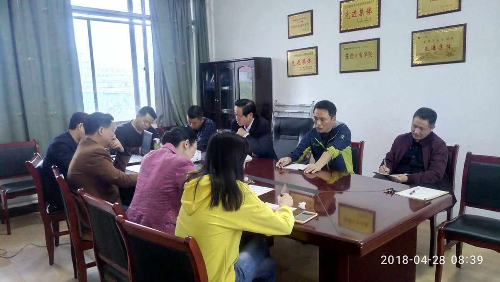

继续教育学院“三兴”活动专题报道
发布日期：2018-01-02继续教育学院为了贯彻落实《萍乡学院“大兴学习之风、大兴调研之风、大兴落实之风，写好萍乡学院‘奋进之笔’”活动实施方案》（萍学院党字〔2018〕18号）文件精神，根据学院“三兴”活动的统一安排，于4月28日上午组织全院干部职工集中学习。学习活动由党总支副书记李海萍同志主持，院长黄文华同志作了题为《结合十九报告从中美贸易战谈我国改革开放》的专题讲座。黄院长立足中美贸易战产生的历史背景和原因，围绕历史、现状及双方贸易数据对比,全面讲述了我国的贸易现状、对美反制裁的策略，以及推动新一轮大改革大开放的大国智慧等方面的知识，论述精辟，讲解精彩。
通过学习，全院干部职工进一步感知到我国四十年改革开放所取得的巨大成果的来之不易，作为一个中国人应该为此感到无比自豪，应该更加认识到改革开放的重要性和必要性。大家纷纷表示，一定要做推动“三兴”活动开展的排头兵，坚决维护以习近平同志为核心的党中央权威和集中统一领导，高举中国特色社会主义伟大旗帜，进一步坚定“四个自信”，为夺取新时代中国特色社会主义事业新胜利，为实现中华民族伟大复兴中国梦，认真学习，勤奋工作，贡献力量！